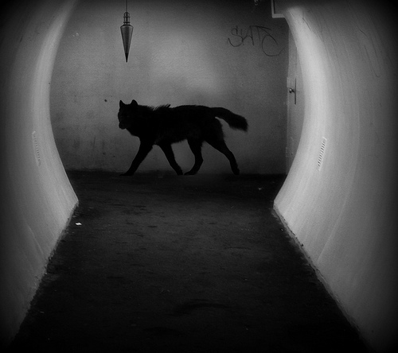

Item #: SCP-023
Object Class: Euclid
Containment Procedures:
 SCP-023 is to be contained in a standard 5 x 5 m Containment Unit. SCP-023 is to be contained in a walled-off intersection of two (2) corridors at Site ██, with at least three (3) meters of space in each direction, and false doors at three (3) of the four (4) ends, in addition to the real door. Security cameras will be placed and maintained above all four (4) doors.At all times, SCP-023's eye sockets are to be filled with spherical inserts made of hard rubber. Eye inserts must be replaced as they degrade. Degradation can be monitored by measuring the brightness of the "burning" effect as observed by security footage. Brightness greater than twelve (12) candela requires that the inserts be replaced within twelve (12) hours. Eye inserts are only to be replaced individually, and only after the sun has completely set. Personnel are not to look directly into eye sockets of SCP-023 at any time.
Following Incident 023-27 all reflective surfaces, including displays, monitors, and eye-wear of any sort are not permitted within 30 meters of SCP-023's cell. This includes monitors linked to security cameras within its enclosure. Security personnel posted at checkpoints outside both corridors will enforce and adhere to this measure.
Experimentation involving SCP-023 has been suspended indefinitely.
Description: SCP-023 is a large, sexless shaggy canine (1.5 meters at the shoulder) with black fur. It has bright orange-red eyes and prominent teeth (see Incident Report 023-26). Any time an individual makes eye contact with SCP-023, either that person or a member of their immediate family will die exactly one (1) year after eye contact is broken. Research into the method of selection is incomplete due to a moratorium on experiments, but the available data suggests that having a larger immediate family lessens the chance of the individual making eye contact themselves dying, and neither a pattern nor a preference in victim types have been found. This may indicate that SCP-023's victim is designated entirely at random, but it is unknown whether this selection occurs at the beginning or at the end of the one-year time period. Attempts to terminate an individual who has made eye contact with SCP-023 and their entire immediate family before the one-year time period has ended [DATA EXPUNGED].
Autopsies of individuals killed by SCP-023's effect show that, while outwardly appearing unharmed, their remains have been 'filled in' with highly compacted ash, including but not limited to all organ systems and the circulatory system. Muscle tissue, bones, and brain tissue universally show signs of exposure to temperatures above ██°C.
If not contained in a setting that at least superficially resembles a "crossroads", SCP-023 will phase through walls to get to the nearest suitable location, incinerating all materials it passes through.
SCP-023 was first brought to the Foundation's attention when it attacked a church in ███████ while it was in session, killing █ civilians directly and [REDACTED] as a result of eye contact. Following retrieval of SCP-023, Class-B amnestics were administered to all witnesses and surviving victims. The incident was covered up as a case of arson.
Addendum 023-001 SCP-023 broke containment on ██/██/████ by passing through its cell wall (Incident 023-01). SCP-023 was later discovered at the intersection of two (2) corridors elsewhere on Site-███. Agent █████ noted SCP-023's similarity to a [REDACTED]. Special Containment Procedures for SCP-023 updated. Assistant Researcher ███████ issued a reprimand for negligence.
Addendum 023-002 SCP-023 has been responsible for the deaths of ███ personnel and ██ civilians since it was first brought into containment on 10/12/██94.
Addendum 023-003: Request for reclassification to Keter pending.
Addendum 023-004: Due to both anomalies focusing on specific geographic spaces, their destructive capabilities, and canine appearance, it is possible that SCP-1111-1 may be a variant of the same phenomenon observed in SCP-023, or vice versa. Investigation into the origin of both anomalies is ongoing. Due to the inability to capture SCP-1111-1 for study, investigations are currently focused on SCP-023.